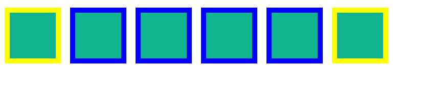
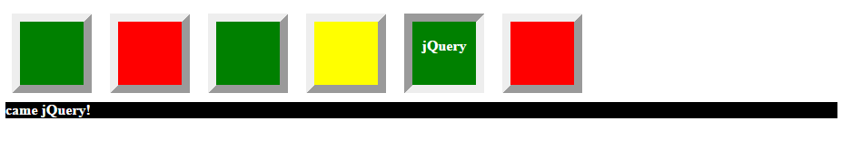
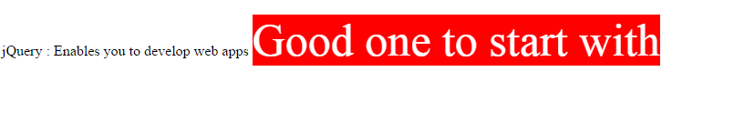
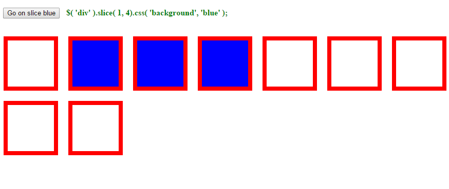
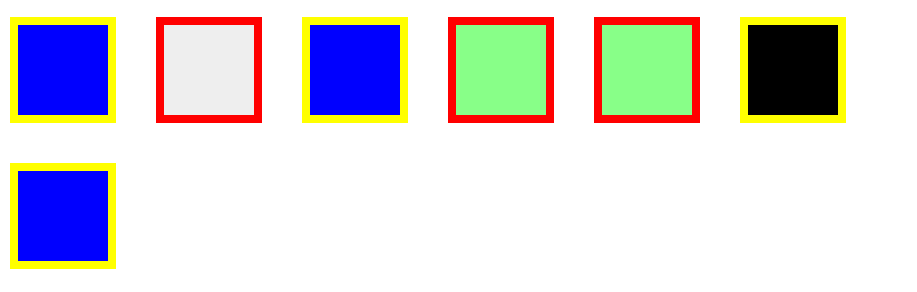

jQuery Filters
jQuery filter() method
jQuery filter() method constructs a jQuery object and holds the all elements which matches the given criteria. The criteria can be given as a selector, argument to filter() method. The filter() in jQuery completely opposite function of not() method.
jQuery filter() method syntax
filter(selector)
Consider a web page with a simple list with 5 div elements, each one has class and whose name is middle filter() methods get all elements which matches the class name value is middle. Manipulation is going to be done by css styles for those who got matched the criteria.
Example
$( "div" )
.css( "background", "#10b48f" )
.filter( ".middle" )
.css( "border-color", "blue" );
Output

Try It Now
jQuery first() method
jQuery first() method constructs a jQuery object which returns the first element in the group of DOM elements. It doesn't take any parameters.
first()
Let’s take a following example in which the first div element out of 3 gets highlighted with red color
Example
$( "p span" ).first().addClass( "highlight" );Output
Try It Now
jQuery has() method
The jQuery has() method constructs a jQuery object which selects all elements from a subset of the matching elements which matches the given specific selector.
Note: To select an element that have multiple elements inside of it, use a comma.
has( selector )
Let us see an example ofjQuery has() method
jQuery has() method example
$( "ul" ).append( "<li>" + ( $( "ul" ).has( "li" ).length ? "Add me" : "Don't add me" ) + "</li>" ); $( "ul" ).has( "li" ).addClass( "full" );Output

Try It Now
jQuery is() Method
The jQuery is() method checks the current selection against a selector and it returns true if at least one element of the selection matches the given selector. If it returns false means no elements matches or given selector is invalid to process.
Note: Like other methods .is() method doesn’t create any object.
is( selector )
Let us see the following example which illustrates the usage of jQuery is() methods.
Example
$( "div" ).one( "click", function() {
if ( $( this ).is( ":first-child" ) ) {
$( "p" ).text( "click me for first" );
} else if ( $( this ).is( ".blue,.red" ) ) {
$( "p" ).text( "click me for first" );
} else if ( $( this ).is( ":contains('jQuery')" ) ) {
$( "p" ).text( "came jQuery!" );
} else {
$( "p" ).html( "nothing <em>special</em>." );
}
$( "p" ).hide().slideDown( "fast" );
$( this ).css({
"border-style": "inset",
cursor: "default"
});
});
Output

Try It Now
jQuery last () Method
The jQuery last() method constructs a jQuery object and selects the last element in the set of DOM elements.
Note: ThejQuery last() method can only select a single element from DOM tree.
last()
Below example describes the usage of .last() method in jQuery.
Example
$( "p span" ).last().addClass( "highlight" );Output

Try It Now
jQuery slice() Method
The jQuery slice() method constructs a jQuery object which selects the subset of elements in the set by specified range of indices.
The start index in slice method identifies the position of particular element in the set and if end is omitted, all elements after this one will be included in the result
Syntax
.slice( start [, end ] )
Look at the below jquery slice() method example code as shown below.
Example
function colorEm() {
var $div = $( "div" );
var start = Math.floor( Math.random() * $div.length );
var end = Math.floor( Math.random() * ( $div.length - start ) ) +
start + 1;
if ( end === $div.length ) {
end = undefined;
}
$div.css( "background", "" );
if ( end ) {
$div.slice( start, end ).css( "background", "blue" );
} else {
$div.slice( start ).css( "background", "blue" );
}
$( "span" ).text( "$( 'div' ).slice( " + start +
(end ? ", " + end : "") +
").css( 'background', 'blue' );" );
}
$( "button" ).click( colorEm );
Output

Try It Now
jQuery not () Method
jQuery not() method constructs a jQuery object which removes elements from the set of matched elements. The resultant of this method holds the element which doesn’t match the given selector.
jQuery not() method syntax
.not( selector )
Example
$( "div" ).not( ".green, #blueone" ) .css( "border-color", "yellow" );Output

Try It Now